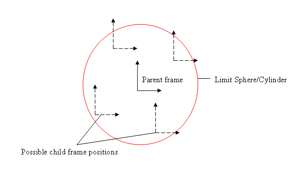
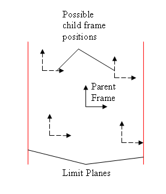
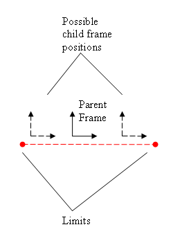

Linear joint limits are currently specified by a single radial distance parameter applying to all three DOFs. It is a radial parameter because with two or three limited DOFs the limits are combined into a circle or a sphere, rather than a square or a cubical box, in order to avoid having multiple limits active at corners.
Three linear DOFs limited: Spherical limit
Limiting all three DOFs gives a spherical
limit surface which can be visualized as a bubble centered on the
parent frame origin,
such that the origin of the child frame is constrained to remain inside
the
sphere.

The red circle becomes a sphere when extended to 3 dimension.
//Spherical linear limit (hard limit)
d6Desc.xMotion = NX_D6JOINT_MOTION_LIMITED;
d6Desc.yMotion = NX_D6JOINT_MOTION_LIMITED;
d6Desc.zMotion = NX_D6JOINT_MOTION_LIMITED;
d6Desc.linearLimit.value=limitRadius;
d6Desc.linearLimit.damping=0.0f;
d6Desc.linearLimit.restitution=0.0f;
Two linear DOFs limited: Cylindrical limit
Limiting two linear DOFs and leaving one free creates a cylindrical limit surface centered on the free axis. The child frame origin is constrained to remain inside the cylinder.
See the above illustration, but instead of the red circle becoming a sphere, when extended to 3 dimension, it becomes a cylinder along the axis into the page.
If the third DOF is locked rather than
left free, the joint collapses to a planar joint with a circular
limit.
//Cylindrical linear limit. The axis of the cylinder is the x axis.
d6Desc.xMotion = NX_D6JOINT_MOTION_FREE;
d6Desc.yMotion = NX_D6JOINT_MOTION_LIMITED;
d6Desc.zMotion = NX_D6JOINT_MOTION_LIMITED;
d6Desc.linearLimit.value=limitRadius;
d6Desc.linearLimit.damping=0.0f;
d6Desc.linearLimit.restitution=0.0f;
One linear DOF limit: Pair-of-planes limit
Limiting just one DOF and leaving the others free creates a pair of parallel limit planes fixed in the parent and separated along the selected limited axis by the radial distance either side of the parent frame origin. The child frame origin is constrained to lie between the two planes.

If one of the free DOFs is locked then the joint collapses to a planar joint and the origin of the child frame is constrained to lie between a pair of parallel lines centered in the selected plane of the parent frame.
If both of the free DOFs are locked then the joint collapses to a point-in-line joint with the child frame origin constrained to lie between ± the specified radial distance along the selected parent frame axis.

//Single linear limit
d6Desc.xMotion = NX_D6JOINT_MOTION_LIMITED;
d6Desc.yMotion = NX_D6JOINT_MOTION_FREE;
d6Desc.zMotion = NX_D6JOINT_MOTION_FREE;
d6Desc.linearLimit.value=limitRadius;
d6Desc.linearLimit.damping=0.0f;
d6Desc.linearLimit.restitution=0.0f;